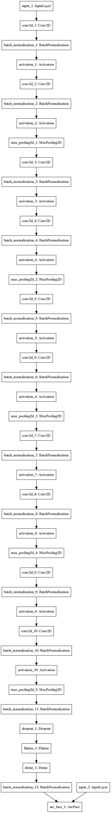
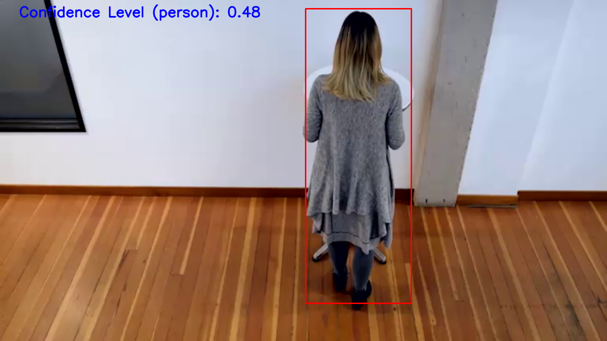
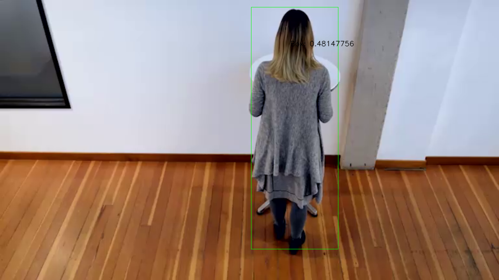
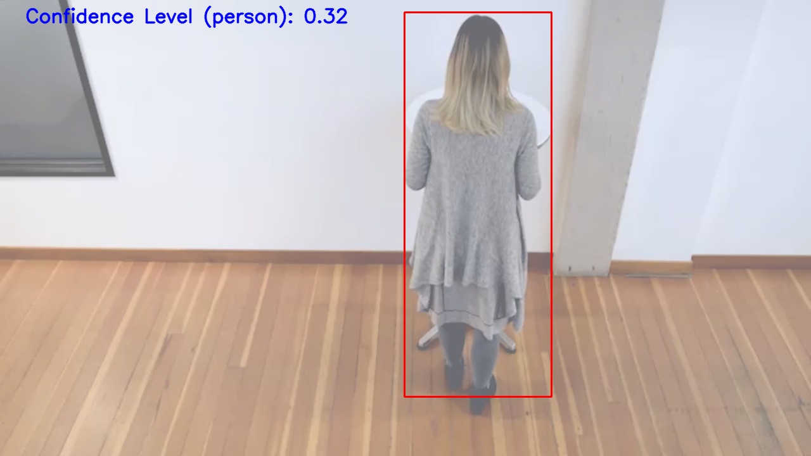

INTRODUCTION TO THE PROJECT
PROJECT QUESTIONS
PROJECT WRITE-UP
Project Instructions: Write-up
Once you have the edge app up and running, you’re not quite finished! You will also create a write-up to help show your understanding of the OpenVINO™ Toolkit and its impact on performance, as well as articulating the use cases of the great application you deployed at the edge.
Answer:
- The write-up is contained within this markdown file
Explain the process behind converting any custom layers. Explain the potential reasons for handling custom layers in a trained model.
Answer:
- The process of converting any custom layers are mentioned under the heading(s):
They are contained within:
Description Models
Description OpenVINO
Description Custom Layers (CL)
Run the pre-trained model without the use of the OpenVINO™ Toolkit. Compare the performance of the model with and without the use of the toolkit (size, speed, CPU overhead). What about differences in network needs and costs of using cloud services as opposed to at the edge?
Answer:
- Logs have been created after running the models in several frameworks
- The results are tabulated to report on Inference Time, Size of Model and Model Accuracy
- Intel benchmarking repository have been specifically selected to proceed with the comparison of performance
They are contained within:
Description Extracted Logs (LOG).
Description Accuracy (ACC).
Explain potential use cases of a people counter app, such as in retail applications. This is more than just listing the use cases - explain how they apply to the app, and how they might be useful.
The use cases have been aggregated from my experience, observations from past learning and interaction with the work environment
They are contained within:
Description Use Cases (CASE).
Discuss lighting, model accuracy, and camera focal length/image size, and the effects these may have on an end user requirement.
Description End User Needs (END USER NEEDS).
If you were unable to find a suitable model and instead used an existing Intel® Pre-Trained Model, you should document the three non-IR models you tried first, how you converted them, and why they failed.
Description Intel Models (INTEL MODELS).
MINIMUM VIABLE PRODUCT
Minimum Viable Project
While following the project instructions and meeting every rubric requirement is all that is required to pass the project, you should also see that as your MVP - minimum viable project. To make your submission stand out from others, there are a number of ways you can build even further on your People Counter app:
Answer:
My presentation is about how to expose the people counter app as video feed, stats using video augmentation, enable and promote learning of different technologies, touch base on planning and execution as well as demonstrating the qualitative differences while performance is measured using an inference layer vs while it is performed on virtual environments such as the people counter app.
Add an alarm or notification when the app detects above a certain number of people on video, or people are on camera longer than a certain length of time.
Answer:
A time recorded has been running in the demonstration video on workspace.
Try out different models than the People Counter, including a model you have trained. Note that this may require some alterations to what information is passed through MQTT and what would need to be displayed by the UI.
Answer:
Models that have been trained as well as converted have been tried.
Deploy to an IoT device (outside the classroom workspace or your personal computer), such as a Raspberry Pi with Intel® Neural Compute Stick.
Answer:
During the course, I have used NCS2 on Linux Machine with 2nd Gen. Intel Processor.
Add a recognition aspect to your app to be able to tell if a previously counted person returns to the frame. The recognition model could also be processed on a second piece of hardware.
Answer:
This has been addressed statistically, as in the model has been laid out and trained using keras with the converted model processed for performance, accuracy and benchmarking. A demonstration of the results have been provided as a screenshot.
Add a toggle to the UI to shut off the camera feed and show stats only (as well as to toggle the camera feed back on). Show how this affects performance (including network effects) and power.
Answer:
An interface output has been provided by hiding the personal data, the problem lies in providing an additional feature to the app, and I believe
https://grafana.com/ Grafana Server is a better option as that has got extensive dashboard tiles which support adding of new features.
These are just a few quick ideas to get you started on further building out your app past the main requirements! Remember, none of these are required.
If you come up with an additional feature you really like, let us know on Twitter @udacity and @IntelSoftware!
Description Write-Up.
Project Write-Up
You can use this document as a template for providing your project write-up. However, if you have a different format you prefer, feel free to use it as long as you answer all required questions.
The project components consist of:
- Ice Breaker Section
xWhich is a Collection of Pascal VOC2007 dataset followed by writing the dataset in `.record` format compatible with `TFRecordDataset` and `TFRecordReader` of tensorflow. Inference time, accuracy are calculated for each data point.
- Computer Vision and Use Case
xxxxxxxxxxOpenCV tests the accuracy for softmax model and the ssd model.OpenCV reports the memory consumption of the model.
- Media Processing and Computer Vision
xxxxxxxxxxPython inference frame from the people counter app is sent to FFMPEG for processing which is then received by FFSERVER and made available as a websocket to a web based applicationBatch processing is used:(1) based on async inference,Batch processing is also used:(2) based on batch size of images
Determines the FPS required for the Application
Performance statistics conducted on people counter
Only Batch of Input Images:
xxxxxxxxxxcd student-repositories/nd131-openvino-people-counter-newui/python main_file.py -m ./models/person-detector/SqueezeNetSSD-5Class.xml -l /opt/intel/openvino/deployment_tools/inference_engine/lib/intel64/libcpu_extension_sse4.so -d CPU -pt 0.45 --thickness 2 -i Pedestrian_Detect_2_1_1.mp4 --batch_size 64 --mode sync --output_log logs/openvino/main_ssd.log --output_video output_video_sync.avi0.016519666915302468FPS: 60.53390816697895
DIRECTORY STRUCTURE
apps:
- ngrok
Include ngrok application for demonstration
certs:
- certificate.p12
- certificate.pem
- key.pem
openssl certifications for any website authentication and authorization
env:
- venv
- bashrc_file
- requirements.txt
Initialize the environment
ffmpeg
- server.conf
server config file
images: Sample images for the README.md
model-repositories:
- SqueezeNetSSD-5Class.prototxt
Contains repository for an edge optimized SSD model in caffe as well as IR format
models:
- arcface-project
- motion-tracking
- object-detector
- person-detector
A repository that contains list of models used for people counter app
resources:
- Pedestrian_Detect_2_1_1.mp4
student-repositories:
arcface-project: How the model was trained
motion-tracking: Motion Tracking and Optical Flow implementation of the model that can demonstrate the brightness or lightness changes in model accuracy
nd131-openvino-people-counter-newui: ND131 Repository: That contains people counter repository in detail
test:
- inference.py
- metrics_face.py
- object_detection.py
- score.py
- test_dnn.py
- test_dnn_accuracy.py
- test_videoio_inference.py
- test_videoio_inference_graph.py
- tests_common.py
webservice:
- server: Mosca MQTT Server
- ui: Websocket UI
Description Models.
HOW TO GENERATE VIDEOS
How to generate the people counter video

The command line input is optimised for performance and accepts batch size of upto 64 due to several models being taken into consideration.
xxxxxxxxxx cd student-repositories/nd131-openvino-people-counter-newui/ python main_file.py -m ./models/person-detector/SqueezeNetSSD-5Class.xml -l /opt/intel/openvino/deployment_tools/inference_engine/lib/intel64/libcpu_extension_sse4.so -d CPU -pt 0.48 -th 2 -i Pedestrian_Detect_2_1_1.mp4 --batch_size 64 --mode sync --output_log logs/openvino/main_log_ssd.log --output_video output_video_sync_video.aviThis is for generating the video based on batch_size = 64 such that identification is done within:
- Inference Time = 1.8 ms
- People Count = 1 per frame if person present otherwise 0
- Person Duration = 0.3522 per batch
HOW TO EXECUTE
How to execute the app
This is for generating the video based on batch_size = 1 such that identification is done within:

- Inference Time = 18 ms
Executes the Application under the Dashboard (threads = 1)
This command line input takes in batch size of 1, and achieves an inference time of 18 ms.
xxxxxxxxxx python main.py -m "models/person-detector/FP32/SqueezeNetSSD-5Class.xml" -i Pedestrian_Detect_2_1_1.mp4 -th 2 -ct 0.38 --batch_size 1 --threads 1 | ffmpeg -v warning -f rawvideo -pixel_format bgr24 -video_size 768x432 -framerate 24 -i - http://0.0.0.0:3004/fac.ffmThis is for generating the video based from the workspace:

Executes the Application under the Dashboard (threads = 2)
This command line input takes in batch size of 1, and achieves an inference time of 18 ms.
xxxxxxxxxx python main.py -m "models/person-detector/FP32/SqueezeNetSSD-5Class.xml" -i Pedestrian_Detect_2_1_1.mp4 -th 2 -ct 0.38 --batch_size 1 --threads 2 | ffmpeg -v warning -f rawvideo -pixel_format bgr24 -video_size 768x432 -framerate 24 -i - http://0.0.0.0:3004/fac.ffmThis is for generating the video based from the workspace (without sharing personal data of the person):

CHOICE OF MODELS
Reason for the models chosen
Reason:
xxxxxxxxxxPerson Detector model is used for bounding box detection when a new person or previous person comes into the frame.models/person-detector/SqueezeNetSSD-5Class.xmlObject Detector is used to demonstrate the heatmap of the model when a new person or a previous person is in the frame.models/object-detector/squeezenet_softmax.xmlFace Detector is used to include the previously counted person in the frame in the statistics based on facial recognition of a person.student-repositories/nd131-openvino-people-counter-newui/models/face_recognizer_lognorm_cl/arcface.xmlstudent-repositories/nd131-openvino-people-counter-newui/models/face_recognizer_pnorm_cl/arcface.xml
CHECKING LAYERS FOR SUPPORTED / UNSUPPORTED
xxxxxxxxxx cd student-repositories/nd131-openvino-people-counter-newui/network/ python feed_network.py -m "../../../models/person-detector/SqueezeNetSSD-5Class.xml" -l /opt/intel/openvino/deployment_tools/inference_engine/lib/intel64/libcpu_extension_sse4.so -d CPU --img ../deep_learning_cv/presentation/person/person-detector.png --batch_size 1 --factor 0.01 (1, 1, 12800, 7) IR successfully loaded into Inference Engine.MODEL SOURCE
WHERE The OpenCV Face Detector Model was Obtained from
Link (PBTxt): https://raw.githubusercontent.com/opencv/opencv/master/samples/dnn/face_detector/opencv_face_detector.pbtxt
WHERE The SSD (Single Shot Detector) Model was Obtained from
This is not Intel® registered Pre-Trained Model that has got a trademark on it.
Link (ProtoTxt): https://raw.githubusercontent.com/intel/Edge-optimized-models/master/SqueezeNet%205-Class%20detection/SqueezeNetSSD-5Class.prototxt
WHERE The Trained Face Recognition Model was Obtained from
Originating from this source code repository: https://github.com/Intel-OpenVINO-Edge-AI-Scholarship/arcface-project
WHERE The SSD (Single Shot Detector) Model lies in a public repository
Originating from this source code repository: https://github.com/intel/Edge-optimized-models
WHERE The Heatmap based Object Detector Model was Obtained from
Originating from this source code repository: https://github.com/caffe2/models
ALL Models lie within this single repository
The modelS are Originating from this repository: https://github.com/Intel-OpenVINO-Edge-AI-Scholarship/model_conversion_formats.git
MODEL OPTIMIZER
The Model Optimizer uses these three models as per the problem statement.
Object Detection
Preprocessing Stage
Face Detection using OpenCV Face Detector
How to download those pre-trained models
Face Detection using OpenCV Viola-Jones
This is available in Linux and Windows as an XML file and uses OpenCV for detection
Pipeline Stage
Person Detectors use only 1 method as seen in protos:
- SQUEEZENET SSD with OpenVINO
How to download those pre-trained models
Recognition Aspect
Face Recognition uses Custom Layers in MYRIAD as well as CPU extension
./student-repositories/nd131-openvino-people-counter-newui/objects/functions/protos/people.proto
Face Recognition is performed when the person is in view within the camera, the custom layers do play an important part in identifying the person and this is where the software which correctly recognizes the person is flexible enough to match the person attributes. This is essential for categorising the risk for conducting the job of correctly recognizing a person.
- ARCFACE (Trained Model)
xxxxxxxxxx message PeopleDetector { optional float confidence_level = 1 [default=0.48]; enum method { SQUEEZENET = 1 [default=1]; SQUEEZENET_EDGE_OPTIMIZED = 2 [default=2]; } optional string box_color = 2 [default="blue"]; }The model(s) has been trained using black and white images as well as color images.
More details are provided here: ./student-repositories/nd131-openvino-people-counter-newui/objects/functions/protos/face.proto
xxxxxxxxxx enum method { ARCFACE_PREBATCHNORM = 1; ARCFACE_AVGPOOL = 2; } enum custom_layers { LOGNORM = 1; RISK_RATIO = 2; }PNORM and LOGNORM
The Face recognition task is a trained model by the developer, as per the problem statement. One of the models - PNORM is a light-weight model and is trained using color images. The LOGNORM model is trained using black and white images.
STOCHASTIC and RISK RATIO
Both the models are used to represent a stochastically determined metric such as an exponential function, and a risk ratio determined metric such as average difference between the ground truth and another observed risk vector of the face.
How to convert from DL framework to OpenVINO model
Face Recognition Model converted from Keras
xxxxxxxxxx git clone https://github.com/Intel-OpenVINO-Edge-AI-Scholarship/arcface-project arcface-projectxxxxxxxxxx cd arcface-project/PNORM Model converted to protocol buffer
xxxxxxxxxx python keras2pb.py --pb_filename arcface.pb --pb_filename_text arcface.pbtxt --folder models/output_pnorm --arch vgg8_arcface_pnorm --num-features 5Architecture of PNORM drawn using keras-visualizer

Architecture of LOGNORM drawn using keras-visualizer

LOGNORM Model converted to protocol buffer
xxxxxxxxxx python keras2pb.py --pb_filename arcface.pb --pb_filename_text arcface.pbtxt --folder models/output_lognorm --arch vgg8_arcface_lognorm --num-features 5 --visualize_graph 1Model Execution Stage
Face Detection
./student-repositories/nd131-openvino-people-counter-newui/objects/functions/protos/face.proto
- OPENCV_HAAR (Cascade)
xxxxxxxxxx cd student-repositories/nd131-openvino-people-counter-newui/ python face_detector.py -m "/usr/share/opencv/haarcascades/haarcascade_frontalface_default.xml" -i deep_learning_cv/presentation/face/face-detector-1.png -t "OpenCV-Haar" -c RED -s 1.3 -th 2 -n 5 
- OPENCV_DNN (Deep Neural Network)
xxxxxxxxxx cd student-repositories/nd131-openvino-people-counter-newui/ python object_detection.py --framework tensorflow --input deep_learning_cv/presentation/face/face-detector-1-3.png --thr 0.65 --model models/opencv_dnn/opencv_face_detector_uint8.pb --backend 3 --target 0 --config models/opencv_dnn/opencv_face_detector.pbtxt 
Selected Face Detector is the OpenCV Deep Learning Object Detector model that is available as a tensorflow model as that is better performing model than OpenCV_Haar
Person Detection
xxxxxxxxxx cd student-repositories/nd131-openvino-people-counter-newui/ python app.py -m "Edge-optimized-models/SqueezeNet-5-Class-detection/FP32/SqueezeNetSSD-5Class.xml" -i deep_learning_cv/presentation/person/person-detector.png -d CPU -c RED -ct 0.48 -th 2
./student-repositories/nd131-openvino-people-counter-newui/objects/functions/protos/people.proto
Description OpenVINO.
How to convert to IR Format
PNORM Model
What I've observed in training this model is it is affecting only 1/2 features by evaluating on different faces. This implies the marginal error between magnitudes of the features can be reduced and that too by reducing the precision of the feature weights.
The Model uses Custom layers that are designed using the Model Optimizer only. No CPU extensions are required for this model. The model evaluation metric for extracting the final or almost final layer is an exponential function averaged over decreasing significant digits.
xxxxxxxxxx /usr/bin/python3.6 /opt/intel/openvino/deployment_tools/model_optimizer/mo_tf.py --data_type "FP32" --tensorflow_object_detection_api_pipeline_config ./models/face_recognizer_pnorm/pipeline.config --tensorflow_use_custom_operations_config ./models/face_recognizer_pnorm/operations.json --input_model ./models/face_recognizer_pnorm/arcface.pb --input_shape "[1,160,160,3]" --input "input_1" --output "batch_normalization_11/cond/Merge" --output_dir ./models/face_recognizer_pnorm_cl/ --extensions ./custom_layers/arcface/cl_pnorm/user_mo_extensions/ --log_level=DEBUG 2>logfile.logLOGNORM Model
The LOGNORM model uses a significance value for the face recognition method. The difference of probability vector is ised to compare against a zscore value.
The Model uses Custom layers that are designed using the Model Optimizer and a CPU extension. The model evaluation function for extracting the final or almost final layer uses a log normal distribution with mean-normalization.
xxxxxxxxxx /usr/bin/python3.6 /opt/intel/openvino/deployment_tools/model_optimizer/mo_tf.py --data_type "FP32" --tensorflow_object_detection_api_pipeline_config ./models/face_recognizer_lognorm/pipeline.config --tensorflow_use_custom_operations_config ./models/face_recognizer_lognorm/operations.json --input_model ./models/face_recognizer_lognorm/arcface.pb --input_shape "[1,160,160,1]" --input "input_1" --output "dense_1/MatMul" --output_dir ./models/face_recognizer_lognorm_cl/ --extensions ./custom_layers/cl_lognorm/user_mo_extensions/ --log_level=DEBUG 2>loglevel.logHow to convert to IR Format
Person Detector SSD Model converted from CaffeModel
The model has been obtained from github which is using a non-intel model, optimized for SSD and Edge.
xxxxxxxxxx git clone https://github.com/intel/Edge-optimized-models edge-optimized-modelsOutput files available are:
- SqueezeNetSSD-5Class.caffemodel
- SqueezeNetSSD-5Class.prototxt
xxxxxxxxxx /usr/bin/python3.6 /opt/intel/openvino/deployment_tools/model_optimizer/mo_caffe.py --input_proto ./model-repositories/Edge-optimized-models/SqueezeNet-5-Class-detection/SqueezeNetSSD-5Class_64.prototxt --input_model ./model-repositories/Edge-optimized-models/SqueezeNet-5-Class-detection/SqueezeNetSSD-5Class.caffemodel --batch 64 --output_dir ./Edge-optimized-models/SqueezeNet-5-Class-detection/output_custom # Move the files mv ./Edge-optimized-models/SqueezeNet-5-Class-detection/output_custom/*.* ./models/person-detector/xxxxxxxxxx /usr/bin/python3.6 /opt/intel/openvino/deployment_tools/model_optimizer/mo_caffe.py --input_proto ./models/person-detector/SqueezeNetSSD-5Class.prototxt --input_model ./models/person-detector/SqueezeNetSSD-5Class.caffemodel --batch 1 --output_dir ./Edge-optimized-models/SqueezeNet-5-Class-detection/output_customHow to convert to IR Format
Object Detector Squeeze Net Softmax Model converted from Caffe2
The SqueezeNet model uses heatmap of size 1000 to differentiate an image. This model is used in case any objects are to be categorised as a common classification category.
The Object Detector model did not have any caffe models within version 1, so a version 2 model caffe2 was downloaded and converted to ONNX which was then converted to .caffemodel.
The evidence for evaluating such a model is presented in:
Some of the scores obtained are: 4.99741234e+08, 4.99650699e+08, 4.99770734e+08.
They do show variability, and the video inference gives values of: 1000.4341534020593, 1000.5163522355364, 1000.1919143769013
The model is open for development, and is categorised as a Stand Out task.
To download a caffe2 model locally, run:
xxxxxxxxxx python -m caffe2.python.models.download squeezenetThe files created are:
- init_net.pb
- predict_net.pb
Those files are then converted to ONNX format to be converted to the compatible CaffeModel .caffemodel for OpenVINO.
xxxxxxxxxx git clone https://github.com/Intel-OpenVINO-Edge-AI-Scholarship/model_conversion_formats.git model_conversion_formatsxxxxxxxxxx cd model_conversion_formats/Convert the Caffe2 Model to ONNX
xxxxxxxxxx python caffe2ToONNX.py --predict_net predict_net.pb --init_net init_net.pb --predict_net_name squeezenet --init_net_name squeezenet --onnx_file squeezenet_softmax.onnxOutput files created are:
- squeezenet_softmax.onnx
Convert the ONNX Model to prototxt and CaffeModel Version 1
xxxxxxxxxx python onnx2caffe/convertCaffe.py [onnx_path="squeezenet_softmax.onnx"] [prototxt_path="squeezenet_softmax.prototxt"] [caffemodel_path="squeezenet_softmax.caffemodel"] Output files created are:
- squeezenet_softmax.caffemodel
- squeezenet_softmax.prototxt
xxxxxxxxxx /usr/bin/python3.6 /opt/intel/openvino/deployment_tools/model_optimizer/mo_caffe.py --input_proto squeezenet_softmax.prototxt --input_model squeezenet_softmax.caffemodel --batch 64 --output_dir ./models/softmaxDescription Custom Layers (CL).
EXPLAINING CUSTOM LAYERS
The process behind converting custom layers involves...
Creating a Custom layer (PNORM)
PNORM is a custom layer where the rounding operation of exponentially activated function applied on the fully connected layer, is approximated to project only 2 features.
Using brightness, the feature values are compared against the accuracy of the face recognition model.
How to generate the extension
xxxxxxxxxx python /opt/intel/openvino/deployment_tools/tools/extension_generator/extgen.py new --mo-tf-ext --mo-op --ie-cpu-ext --ie-gpu-ext --output_dir=./custom_layers/arcface/cl_pnormOutput files created are:
- user_ie_extensions
- user_mo_extensions
How to convert to IR format
Creating the Custom Layer
xxxxxxxxxx /usr/bin/python3.6 /opt/intel/openvino/deployment_tools/model_optimizer/mo_tf.py --data_type "FP32" --tensorflow_object_detection_api_pipeline_config ./models/face_recognizer_pnorm/pipeline.config --tensorflow_use_custom_operations_config ./models/face_recognizer_pnorm/operations.json --input_model ./models/face_recognizer_pnorm/arcface.pb --input_shape "[1,160,160,3]" --input "input_1" --output "batch_normalization_11/cond/Merge" --output_dir ./models/face_recognizer_pnorm_cl/ --extensions ./custom_layers/arcface/cl_pnorm/user_mo_extensions/ --log_level=DEBUG 2>logfile.logCreating the CPU Extension
xxxxxxxxxx cd /home/aswin/Documents/Courses/Udacity/Intel-Edge-Phase2/Projects/People-Counter-App/Repository/nd131-openvino-people-counter-newui/custom_layers/cl_lognorm/user_ie_extensions/cpu/build cmake .. make allCreating a Custom layer (LOGNORM)
LOGNORM is a custom layer where the downscaled inputs to fullyconnected layer is transformed using a log normal distribution.
xxxxxxxxxx python /opt/intel/openvino/deployment_tools/tools/extension_generator/extgen.py new --mo-tf-ext --mo-op --ie-cpu-ext --ie-gpu-ext --output_dir=./custom_layers/cl_lognormOutput files created are:
- user_ie_extensions
- user_mo_extensions
How to convert to IR format
Creating the Custom Layer
xxxxxxxxxx /usr/bin/python3.6 /opt/intel/openvino/deployment_tools/model_optimizer/mo_tf.py --data_type "FP32" --tensorflow_object_detection_api_pipeline_config ./models/face_recognizer_lognorm/pipeline.config --tensorflow_use_custom_operations_config ./models/face_recognizer_lognorm/operations.json --input_model ./models/face_recognizer_lognorm/arcface.pb --input_shape "[1,160,160,1]" --input "input_1" --output "batch_normalization_11/cond/Merge" --output_dir ./models/face_recognizer_lognorm_cl/ --extensions ./custom_layers/cl_lognorm/user_mo_extensions/ --log_level=DEBUG 2>logfile.logCreating the CPU Extension
xxxxxxxxxx cd /home/aswin/Documents/Courses/Udacity/Intel-Edge-Phase2/Projects/People-Counter-App/Repository/nd131-openvino-people-counter-newui/custom_layers/cl_pnorm/user_ie_extensions/cpu/build cmake .. make allSome of the potential reasons for handling custom layers are...
Feeding the network layers with config parameters:
xxxxxxxxxxplugin.set_config({})Compatibility with both MYRIAD and CPU devices
xxxxxxxxxxplugin.set_config( {'TARGET_FALLBACK': 'HETERO:MYRIAD,CPU'} , device)plugin.set_config({"VPU_CUSTOM_LAYERS": 'xml_path'}, device)Improve performance and accuracy of the output layer
xxxxxxxxxxin_blob_name = "input_1"out_blob_name = "dense_1/MatMul"custom_layer_blob_name = "batch_normalization_11/cond/Merge"self.network.forward_all(**{in_blob_name: input_blob})[custom_layer_blob_name]In order to retrain the trained model with new layer as the network layer
xxxxxxxxxxIn Tensorflow, checkpoints are used to re-train the modelIn Caffe2 and Caffe, the network classes can handle the importing of layers and retrainingIn PyTorch, new modules are created in order to extend the current implementation of the networkIn ONNX and Keras, new layers are configured
Description Performance (PERF).
COMPARING MODEL PERFORMANCE
My method(s) to compare models before and after conversion to Intermediate Representations were...
DATASETS
I decided to use a common tfrecord[.record] dataset for:
- Person Detection
- Object Detection
- Face Recognition
Summary of the dataset is as follows:
Validating now..., Records: 2008
Num of people: 5447
For the dataset I used Pascal VOC2007 dataset with these details:
File that contains Person images to be trained
./student-repositories/nd131-openvino-people-counter-newui/formats/person_trainval_cmd.txt was modified to reflect the pandas format.
File that stores data and metadata such as bounding boxes and binary images in 1 single tfrecord file
./student-repositories/nd131-openvino-people-counter-newui/formats/tfrecord-voc.record tfrecord written VOC
xxxxxxxxxx git clone https://github.com/Intel-OpenVINO-Edge-AI-Scholarship/tf-object_detection tf-object_detectionxxxxxxxxxx cd tf-object_detection/Output files created are:
- tfrecord-voc.record
The annotations are saved in the annotations folder.
How to create tf record annotations
xxxxxxxxxx python object_detection/dataset_tools/create_pascal_tf_record.py --data_dir=annotations/VOCtrainval_06-Nov-2007/VOCdevkit --year=VOC2007 --output_path=pascal_voc_tfrecord/tfrecord-voc.record --label_map_path annotations/VOCtrainval_06-Nov-2007/VOCdevkit/VOC2007/ImageSets/Main/person_trainval_cmd.txt --annotations_dir Annotations --set trainvalDescription Accuracy (ACC).
ACCURACY AND MODEL PERFORMANCE
For reporting on accuracy of the models and performance, I decided to use intelai/models repository
xxxxxxxxxx git clone https://github.com/Intel-OpenVINO-Edge-AI-Scholarship/intelai-models-benchmarkingxxxxxxxxxx cd intelai-models-benchmarking/benchmark/Execute the benchmarking app
xxxxxxxxxx python launch_benchmark.py --output-dir=./tensorflow_object_detection_create_coco_tfrecord -mo=inference --data-location=./pascal_voc_tfrecord/tfrecord-voc.record [-rd=0.5] --in-graph=./models/{model_folder}/{model_name}[`.prototxt`,`.hdf5`] --in-weights=./models/{model_folder}/{model_name}[`.caffemodel`] -v --framework=[`caffe`,`keras`] --p=fp32 -m=[`detection_softmax`,`face_recognition_aspect`, `ssd_squeezenet`] -r=./models/{model_folder} --num-inter-threads=1 --num-intra-threads=1 [`--benchmark-only`,`--accuracy-only`] --batch_size=1 --annotations_dir=./annotations/VOCtrainval_06-Nov-2007/VOCdevkit/VOC2007/JPEGImages 2>&1 | tee [`./formats/benchmark_person_detection-voc.log`, `./formats/benchmark_face_recognition_aspect-voc.log`, `./formats/benchmark_object_detection-voc.log`]Description Tabulated Results (TAB).
Without the use of OpenVINO
Face Recognition Keras ArcFace Model
The difference between model accuracy pre- and post-conversion was...
xxxxxxxxxxFACE RECOGNITION (ARCFACE) PNORM
| ------------------ | ---------------------- | ------------------------- | -------------- |
| Test | Pre-Trained Model | IR Model | Difference |
|---|---|---|---|
| Inference Time | 0.015306935796031245 | 0.001819 | 0.0134879 |
| Size of Model | 0.9486 MB | 0.3805 MB | 0.5681 |
| Memory / Page File | 808840 bytes | 444.405 Mb, 50.120 GFlops | 443.6336301 |
| Model Accuracy | 1967 images, 0.9 | 256 images, 0.7 | 0.2 |
The difference between model accuracy pre- and post-conversion was...
xxxxxxxxxxFACE RECOGNITION (ARCFACE) LOGNORM
| ------------------- | ----------------------| -------------------------- | -------------- |
| Test | Pre-Trained Model | IR Model | Difference |
|---|---|---|---|
| Inference Time | 0.021962404251098633 | 0.005555496 | 0.0164069 |
| Size of Model | 9.9 MB | 4.8 MB, 50.120 GFlops | 5.1 MB |
| Memory / Page File | 9753960 bytes | 342.401 Mb, 83.717 GFlops | 333.0988989 |
| Model Accuracy | 0.5031695507549447 | 4.799718069103953e-08 | 0.5031695028 |
FACE DETECTOR used as a preprocessing model for face recognition
This OpenCV tensorflow model is used because it shows high performance when compared to the OpenCV Viola-Jones model.
Model Scores
xxxxxxxxxx numactl --cpunodebind=0 --membind=0 python test_videoio_inference_graph.py --input_weights models/output_lognorm/model_sm.hdf5 --batch_size 1 --callback test_lognorm_model --method lognorm --face_detector_weights models/opencv_dnn/opencv_face_detector_uint8.pb --face_detector_model "models/opencv_dnn/opencv_face_detector.pbtxt" --name face_detectorMemory Consumption and Model Size for LOGNORM
xxxxxxxxxx python test_dnn_accuracy.py test_lognorm_modelMemory Consumption and Model Size for SOFTMAX DETECTION
xxxxxxxxxx python modules/dnn/misc/python/test/test_dnn_accuracy.py test_perf_detection_softmax_modelCPU Overhead
xxxxxxxxxx numastat -p /usr/bin/python3.6 logs/keras/numalog.logModel Stat
xxxxxxxxxx h5stat -Ss -f ./models/{model_name}/model_sm[`.hdf5`]Video performance using OpenCV
xxxxxxxxxx python test_videoio_inference.py --input_graph dnn/layers/squeezenet_softmax_64.prototxt --input_weights dnn/layers/squeezenet_softmax.caffemodel --batch_size 64 --input_file ./Pedestrian_Detect_2_1_1.mp4 --name videoio_caffe --callback test_video 2> logs/keras/network.logObject Detection Model
Benchmarking using OpenCV
The difference between model accuracy pre- and post-conversion was...
xxxxxxxxxxOBJECT DETECTION (SQUEEZENET SOFTMAX)
| Test | Pre-Trained Model | IR Model | Difference |
| ------------------- | --------------------- | ------------------------- | -------------- |
| Inference Time | 0.03335440531 | 0.007421 | 0.0259337 |
| Size of Model | 4.9 MB | 4.9 MB | 0.0 |
| Memory / Page File | 34.16 Mb, 0.71 GFlops | 455.162 Mb, 45.224 GFlops | 421.002 |
| Video Accuracy, | 0.04092261904761905 | 0.04092261904761905 | 0.0 |
| Avg Threshold |
Performance of SqueezeNet Softmax
xxxxxxxxxx export OPENCV_TEST_DATA_PATH=./modules/dnn/misc/python/test ./bin/opencv_perf_dnn --gtest_filter="*SqueezeSoftmaxNetCaffe2*<!---
A custom test script on accuracy of DNNs for the softmax model
xxxxxxxxxx python modules/dnn/misc/python/test/test_dnn_accuracy.py test_detection_softmax_model--->
In calculating the accuracy, the difference between true prediction probability and noised prediction probability is evaluated.
Average values obtained on iterating over 10 times and incrementing the pixel value randomly by 0 or 1, using np.random.randint(0,2,frame.shape),0,255).astype(np.uint8)
Average Values = 0.011554382729999998
<!---
xxxxxxxxxx ('0.0049307793 not less than 1e-05 : prediction probility in max. 0.0049307793',) ('0.008819863 not less than 1e-05 : prediction probility in max. 0.008819863',) ('0.012360752 not less than 1e-05 : prediction probility in max. 0.012360752',) ('0.004588902 not less than 1e-05 : prediction probility in max. 0.004588902',) ('0.009465113 not less than 1e-05 : prediction probility in max. 0.009465113',) ('0.015067503 not less than 1e-05 : prediction probility in max. 0.015067503',) ('0.019973546 not less than 1e-05 : prediction probility in max. 0.019973546',) ('0.012231916 not less than 1e-05 : prediction probility in max. 0.012231916',) ('0.009469554 not less than 1e-05 : prediction probility in max. 0.009469554',) ('0.018635899 not less than 1e-05 : prediction probility in max. 0.018635899',)--->
A custom test script on performance of DNNs for the softmax model
xxxxxxxxxx python modules/dnn/misc/python/test/test_dnn_accuracy.py test_perf_detection_softmax_modelIn calculating the memory consumption, the weights are evaluated with the GFlops.
xxxxxxxxxx Memory consumption: Weights(parameters): 5.713042259216309 Mb Blobs: 28.459837913513184 Mb Calculation complexity: 0.70646016 GFlopsCPU Overhead
xxxxxxxxxx numastat -p /usr/bin/python3.6 > logs/softmax/numalog.logVideo performance
xxxxxxxxxx # tests on caffe module /usr/bin/python3.6 -c "import caffe" /usr/bin/python3.6 test_videoio_inference.py --input_graph dnn/layers/squeezenet_softmax_64.prototxt --input_weights dnn/layers/squeezenet_softmax.caffemodel --batch_size 64 --input_file ./Pedestrian_Detect_2_1_1.mp4 --name videoio_caffe --callback test_video 2> logs/softmax/network.logPerson Detection Model
Benchmarking using Intel-AI/models
xxxxxxxxxxPERSON DETECTION (SQUEEZENET EDGE OPTIMIZED)
| Test | Pre-Trained Model | IR Model | Difference |
| ------------------------- | --------------------- | ------------------ | -------------- |
| Inference Time | 0.03105714172 | 0.01559044955 | 0.01546669 |
| Size of Model | 12.6 MB | 12.6 MB | 0.0 |
| Memory / Page File | 65.1905 Mb, 2.213 GFlops | 846.15 Mb,143.49 GFlops | 780.9595 |
| Video Accuracy, Hit Rate | 0.5474268 | 0.8094421511604672 | 0.26201535 |
| 0.5987507 | 0.8121725413948298 | 0.21342184 | |
| 0.63358194 | 0.8747385938962301 | 0.241156654 | |
| Model Accuracy | map: 0.03% | map: 0.03% | 0 |
| recall: 27.06% | recall: 27.06% | 0 | |
| detection_accuracy: 3.38% | detection_accuracy: 3.38% | 0 |
Bench-marking using OpenCV
xxxxxxxxxx git clone https://github.com/opencv/opencv opencv-repo cd opencv-repo/ ./opencv_perf_dnn --gtest-filter="*SqueezeNetSSDEdgeOptimized*"A custom test script on accuracy of DNNs for the SSD model
xxxxxxxxxx python modules/dnn/misc/python/test/test_dnn_accuracy.py test_ssd_modelThe accuracy of the SSD model is equated to the Confidence Threshold.
xxxxxxxxxx Accuracy / Min. Confidence threshold = 0.48147756
A custom test script on performance of DNNs for the SSD model
xxxxxxxxxx python modules/dnn/misc/python/test/test_dnn_accuracy.py test_perf_ssd_modelxxxxxxxxxx Memory consumption: Weights(parameters): 12.975508689880371 Mb Blobs: 52.214980125427246 Mb Calculation complexity: 2.212587355 GFlopsCPU Overhead
xxxxxxxxxx numastat -p /usr/bin/python3.6 > logs/ssd/numalog.logVideo performance
xxxxxxxxxx numactl --cpunodebind=0 --membind=0 /usr/bin/python3.6 test_videoio_inference.py --input_graph dnn/SqueezeNetSSD-5Class_64.prototxt --input_weights dnn/SqueezeNetSSD-5Class.caffemodel --batch_size 64 --input_file ./Pedestrian_Detect_2_1_1.mp4 --name videoio_caffe --callback test_video 2> logs/ssd/network.logUsing OpenVINO
Face Recognition Keras ArcFace Model
Benchmarking using Inference Engine API
ACCURACY
xxxxxxxxxx /usr/bin/python3.6 /opt/intel/openvino/deployment_tools/open_model_zoo/tools/accuracy_checker/setup.py install accuracy_check -m config.ymlBENCHMARK
xxxxxxxxxx python benchmark_app.py -m models/{model_folder}/{model_name}.xml -d CPU -i datasets/vggface2_test_2/test/n000001/xxxxxxxxxx python benchmark_app.py -m models/{model_folder}/{model_name}.xml -d MYRIAD -i datasets/vggface2_test_2/test/n000001/xxxxxxxxxxFACE RECOGNITION (ARCFACE) PNORM
Model:
- model_folder = output_pnorm
- model_name = arcface[.xml]
xxxxxxxxxxFACE RECOGNITION (ARCFACE) LOGNORM
Model:
model_folder = output_lognorm
model_name = arcface[.xml]
OBJECT DETECTION (SQUEEZENET SOFTMAX)
Model:
model_folder = person_detect
model_name = squeezenet_softmax[.xml]
PERSON DETECTION (SQUEEZENET EDGE OPTIMIZED)
Model:
- model_folder = object_detect
- model_name = SqueezeNetSSD-5Class[.xml]
The size of the model pre- and post-conversion was...
Using OpenVINO
xxxxxxxxxx cd /opt/intel/openvino/ python deployment_tools/tools/workbench/model_analyzer/model_analyzer.py -m models/{model_folder}/{model_name}.xml -w models/{model_folder}/{model_name}.bin -o report/PNORM
xxxxxxxxxx [ INFO ] Loading network files: ./models/face_recognizer_pnorm_cl/arcface.xml ./models/face_recognizer_pnorm_cl/arcface.bin [ INFO ] GFLOPs: 50.120 [ INFO ] GIOPs: 0.000 [ INFO ] MParams: 0.095 [ INFO ] Sparsity: 0.000 [ INFO ] Minimum memory consumption: 163.840 [ INFO ] Maximum memory consumption: 444.405LOGNORM
xxxxxxxxxx [ INFO ] Loading network files: ./models/face_recognizer_lognorm_cl/arcface.xml ./models/face_recognizer_lognorm_cl/arcface.bin [ INFO ] GFLOPs: 83.717 [ INFO ] GIOPs: 0.000 [ INFO ] MParams: 1.211 [ INFO ] Sparsity: 0.000 [ INFO ] Minimum memory consumption: 81.920 [ INFO ] Maximum memory consumption: 342.401SqueezeNet
xxxxxxxxxx [ INFO ] GFLOPs: 45.224 [ INFO ] GIOPs: 0.000 [ INFO ] MParams: 1.235 [ INFO ] Sparsity: 0.000 [ INFO ] Minimum memory consumption: 100.934 [ INFO ] Maximum memory consumption: 455.162 [ INFO ] Network status information file name: logs/reports/squeezenet/model_report.csvSSD Edge Optimized
xxxxxxxxxx [ INFO ] GFLOPs: 143.487 [ INFO ] GIOPs: 0.000 [ INFO ] MParams: 3.139 [ INFO ] Sparsity: 0.000 [ INFO ] Minimum memory consumption: 148.685 [ INFO ] Maximum memory consumption: 846.150 [ INFO ] Network status information file name: logs/reports/ssd/model_report.csvDescription Extracted Logs (LOG).
Without the use of OpenVINO
FACE RECOGNITION
The log file that contains the details ./student-repositories/nd131-openvino-people-counter-newui/formats/benchmark_face_recognition_aspect-voc.md
xxxxxxxxxx 1/1 [==============================] - 0s 17ms/step Batchsize: 1 Time spent per BATCH: 23.1845 ms Total samples/sec: 43.1323 samples/s Total labeled samples: 1 person 1/1 [==============================] - 0s 24ms/step Batchsize: 1 Time spent per BATCH: 23.1906 ms Total samples/sec: 43.1210 samples/s Total labeled samples: 1 person 1/1 [==============================] - 0s 19ms/step Batchsize: 1 Time spent per BATCH: 23.1916 ms Total samples/sec: 43.1191 samples/s Total labeled samples: 1 person 1/1 [==============================] - 0s 17ms/step Batchsize: 1 Time spent per BATCH: 23.1912 ms Total samples/sec: 43.1199 samples/s Total labeled samples: 1 person[OBJECT / PERSON] DETECTOR [SQUEEZENET SOFTMAX / SQUEEZENET SSD EDGE OPTIMIZED]
The log file that contains the details ./student-repositories/nd131-openvino-people-counter-newui/formats/benchmark_object_detection-voc.md
xxxxxxxxxx (1, 3, 224, 224) Batchsize: 1 Time spent per BATCH: 141.2901 ms Total samples/sec: 7.0776 samples/s Total labeled samples: 1 person (1, 3, 224, 224) Batchsize: 1 Time spent per BATCH: 141.2874 ms Total samples/sec: 7.0778 samples/s Total labeled samples: 1 person (1, 3, 224, 224) Batchsize: 1 Time spent per BATCH: 141.2856 ms Total samples/sec: 7.0779 samples/s Total labeled samples: 1 person (1, 3, 224, 224) steps = 999, 0.13873958587646484 sec Batchsize: 1 Time spent per BATCH: 141.2831 ms Total samples/sec: 7.0780 samples/s Total labeled samples: 1 personThe log file that contains the details ./student-repositories/nd131-openvino-people-counter-newui/formats/benchmark_person_detection-voc.md
xxxxxxxxxx Batchsize: 1 Time spent per BATCH: 5.8722 ms Total samples/sec: 170.2947 samples/s Total labeled samples: 1 person Batchsize: 1 Time spent per BATCH: 5.8749 ms Total samples/sec: 170.2161 samples/s Total labeled samples: 1 person Batchsize: 1 Time spent per BATCH: 5.8744 ms Total samples/sec: 170.2288 samples/s Total labeled samples: 1 person steps = 999, 0.005470752716064453 sec Batchsize: 1 Time spent per BATCH: 5.8740 ms Total samples/sec: 170.2405 samples/s Total labeled samples: 1 personACCURACY
Convert Annotations from Pascal VOC2007
xxxxxxxxxx python /opt/intel/openvino/deployment_tools/tools/accuracy_checker_tool/convert_annotation.py voc_detection --imageset_file /home/aswin/Documents/Courses/Udacity/Intel-Edge/Repository/caffe2-pose-estimation/annotations/VOCtrainval_06-Nov-2007/VOCdevkit/VOC2007/ImageSets/Main/person_trainval_imgsets_data.txt --annotations_dir /home/aswin/Documents/Courses/Udacity/Intel-Edge/Repository/caffe2-pose-estimation/annotations/VOCtrainval_06-Nov-2007/VOCdevkit/VOC2007/Annotations --images_dir /home/aswin/Documents/Courses/Udacity/Intel-Edge/Repository/caffe2-pose-estimation/annotations/VOCtrainval_06-Nov-2007/VOCdevkit/VOC2007/JPEGImages/ --output_dir ./outputFACE RECOGNITION
Without using OpenVINO
Accuracy
The log file that contains the details ./student-repositories/nd131-openvino-people-counter-newui/formats/benchmark_face_recognition_aspect-accuracy-check-voc.md
Image Augmentation
xxxxxxxxxxIMAGE---------FLIPPING THE IMAGE ROTATING THE IMAGE------------------ ------------------Flip the image horizontally Rotate the image by 8°
xxxxxxxxxx DetectionBoxes_Precision/mAP'1.5104485276902977e-07 DetectionBoxes_Precision/mAP (large)'4.6072545830664966e-07 DetectionBoxes_Precision/mAP (medium)'0.0 DetectionBoxes_Precision/mAP (small)'0.0 DetectionBoxes_Precision/mAP@.50IOU'1.5104485276902977e-06 DetectionBoxes_Precision/mAP@.75IOU'0.0 DetectionBoxes_Recall/AR@1'0.0 DetectionBoxes_Recall/AR@10'0.0 DetectionBoxes_Recall/AR@100'0.00016863406408094435 DetectionBoxes_Recall/AR@100 (large)'0.00024213075060532688 DetectionBoxes_Recall/AR@100 (medium)'0.0 DetectionBoxes_Recall/AR@100 (small)'0.0 comments included
<!---
xxxxxxxxxx 32/542 [>.............................] - ETA: 9s 64/542 [==>...........................] - ETA: 8s 96/542 [====>.........................] - ETA: 8s 128/542 [======>.......................] - ETA: 7s 160/542 [=======>......................] - ETA: 7s 192/542 [=========>....................] - ETA: 6s 224/542 [===========>..................] - ETA: 5s 256/542 [=============>................] - ETA: 5s 288/542 [==============>...............] - ETA: 4s 320/542 [================>.............] - ETA: 4s 352/542 [==================>...........] - ETA: 3s 384/542 [====================>.........] - ETA: 2s 416/542 [======================>.......] - ETA: 2s 448/542 [=======================>......] - ETA: 1s 480/542 [=========================>....] - ETA: 1s 512/542 [===========================>..] - ETA: 0s 542/542 [==============================] - 10s 19ms/step 32/546 [>.............................] - ETA: 9s 64/546 [==>...........................] - ETA: 9s 96/546 [====>.........................] - ETA: 8s 128/546 [======>.......................] - ETA: 8s 160/546 [=======>......................] - ETA: 7s 192/546 [=========>....................] - ETA: 6s 224/546 [===========>..................] - ETA: 6s 256/546 [=============>................] - ETA: 5s 288/546 [==============>...............] - ETA: 5s 320/546 [================>.............] - ETA: 4s 352/546 [==================>...........] - ETA: 3s 384/546 [====================>.........] - ETA: 3s 416/546 [=====================>........] - ETA: 2s 448/546 [=======================>......] - ETA: 2s 480/546 [=========================>....] - ETA: 1s 512/546 [===========================>..] - ETA: 0s 544/546 [============================>.] - ETA: 0s 546/546 [==============================] - 12s 22ms/step /home/aswin/.local/lib/python3.6/site-packages/tensorflow/python/data/ops/iterator_ops.py:408: UserWarning: An unusually high number of `Iterator.get_next()` calls was detected. This often indicates that `Iterator.get_next()` is being called inside a training loop, which will cause gradual slowdown and eventual resource exhaustion. If this is the case, restructure your code to call `next_element = iterator.get_next()` once outside the loop, and use `next_element` as the input to some computation that is invoked inside the loop. warnings.warn(GET_NEXT_CALL_WARNING_MESSAGE) /home/aswin/Documents/Courses/Udacity/Intel-Edge-Phase2/Projects/People-Counter-App/Repository/models/models/object_detection/keras/face_recognition_aspect/inference/score.py:16: RuntimeWarning: divide by zero encountered in true_divide diff = np.abs(risk_vector1 - risk_vector2) / risk_vector1 creating index... index created! creating index... index created! Running per image evaluation... Evaluate annotation type *bbox* DONE (t=4.29s). Accumulating evaluation results... DONE (t=0.50s). Average Precision (AP) @[ IoU=0.50:0.95 | area= all | maxDets=100 ] = 0.000 Average Precision (AP) @[ IoU=0.50 | area= all | maxDets=100 ] = 0.000 Average Precision (AP) @[ IoU=0.75 | area= all | maxDets=100 ] = 0.000 Average Precision (AP) @[ IoU=0.50:0.95 | area= small | maxDets=100 ] = 0.000 Average Precision (AP) @[ IoU=0.50:0.95 | area=medium | maxDets=100 ] = 0.000 Average Precision (AP) @[ IoU=0.50:0.95 | area= large | maxDets=100 ] = 0.000 Average Recall (AR) @[ IoU=0.50:0.95 | area= all | maxDets= 1 ] = 0.000 Average Recall (AR) @[ IoU=0.50:0.95 | area= all | maxDets= 10 ] = 0.000 Average Recall (AR) @[ IoU=0.50:0.95 | area= all | maxDets=100 ] = 0.000 Average Recall (AR) @[ IoU=0.50:0.95 | area= small | maxDets=100 ] = 0.000 Average Recall (AR) @[ IoU=0.50:0.95 | area=medium | maxDets=100 ] = 0.000 Average Recall (AR) @[ IoU=0.50:0.95 | area= large | maxDets=100 ] = 0.000 'DetectionBoxes_Precision/mAP': 1.5104485276902977e-07, 'DetectionBoxes_Precision/mAP (large)': 4.6072545830664966e-07, 'DetectionBoxes_Precision/mAP (medium)': 0.0, 'DetectionBoxes_Precision/mAP (small)': 0.0, 'DetectionBoxes_Precision/mAP@.50IOU': 1.5104485276902977e-06, 'DetectionBoxes_Precision/mAP@.75IOU': 0.0, 'DetectionBoxes_Recall/AR@1': 0.0, 'DetectionBoxes_Recall/AR@10': 0.0, 'DetectionBoxes_Recall/AR@100': 0.00016863406408094435, 'DetectionBoxes_Recall/AR@100 (large)': 0.00024213075060532688, 'DetectionBoxes_Recall/AR@100 (medium)': 0.0, 'DetectionBoxes_Recall/AR@100 (small)': 0.0-->
comments_included
<!--
xxxxxxxxxx 2002: { 'boxes': array([[238, 241, 90, 112], [238, 241, 90, 112], [238, 241, 90, 112], ..., [103, 57, 119, 158], [157, 114, 196, 270], [125, 306, 179, 195]]), 'classes': array([1]), 'scores': array([0.793893], dtype=float32)}, 2003: { 'boxes': array([[238, 241, 90, 112], [238, 241, 90, 112], [238, 241, 90, 112], ..., [103, 57, 119, 158], [157, 114, 196, 270], [125, 306, 179, 195]]), 'classes': array([1]), 'scores': array([0.97498477], dtype=float32)}, 2004: { 'boxes': array([[238, 241, 90, 112], [238, 241, 90, 112], [238, 241, 90, 112], ..., [103, 57, 119, 158], [157, 114, 196, 270], [125, 306, 179, 195]]), 'classes': array([1]), 'scores': array([0.97498477], dtype=float32)}, 2005: { 'boxes': array([[238, 241, 90, 112], [238, 241, 90, 112], [238, 241, 90, 112], ..., [103, 57, 119, 158], [157, 114, 196, 270], [125, 306, 179, 195]]), 'classes': array([1]), 'scores': array([0.994861], dtype=float32)}, 2006: { 'boxes': array([[238, 241, 90, 112], [238, 241, 90, 112], [238, 241, 90, 112], ..., [125, 306, 179, 195], [261, 103, 95, 125], [124, 44, 93, 112]]), 'classes': array([1]), 'scores': array([0.9248928], dtype=float32)}, 2007: { 'boxes': array([[238, 241, 90, 112], [238, 241, 90, 112], [238, 241, 90, 112], ..., [124, 44, 93, 112], [261, 103, 95, 125], [124, 44, 93, 112]]), 'classes': array([1]), 'scores': array([0.8621292], dtype=float32)-->
Accuracy Score
Using risk vector difference = 0.05, the error is calculated using the difference between augmented face and the original face from the dataset. The risk vector difference is derived from an empirical value.
The risk vectors are loaded from a database and there will not be any observable difference in the performance while switch off or switch on of camera feed.
PERSON DETECTION
Accuracy
Person Detection uses SSD bounding boxes and they are evaluated against COCO evaluator from pycocotools.
The log file that contains the details ./student-repositories/nd131-openvino-people-counter-newui/formats/benchmark_ssd_squeezenet-accuracy-check-voc.md
xxxxxxxxxx DetectionBoxes_Precision/mAP0.0 DetectionBoxes_Precision/mAP (large)0.0 DetectionBoxes_Precision/mAP (medium)0.0 DetectionBoxes_Precision/mAP (small)0.0 DetectionBoxes_Precision/mAP@.50IOU0.0 DetectionBoxes_Precision/mAP@.75IOU0.0 DetectionBoxes_Recall/AR@10.0 DetectionBoxes_Recall/AR@100.0 DetectionBoxes_Recall/AR@1000.0 DetectionBoxes_Recall/AR@100 (large)0.0 DetectionBoxes_Recall/AR@100 (medium)0.0 DetectionBoxes_Recall/AR@100 (small)0.0 comments included
<!--
xxxxxxxxxx Average Precision (AP) @[ IoU=0.50:0.95 | area= all | maxDets=100 ] = 0.000 Average Precision (AP) @[ IoU=0.50 | area= all | maxDets=100 ] = 0.000 Average Precision (AP) @[ IoU=0.75 | area= all | maxDets=100 ] = 0.000 Average Precision (AP) @[ IoU=0.50:0.95 | area= small | maxDets=100 ] = 0.000 Average Precision (AP) @[ IoU=0.50:0.95 | area=medium | maxDets=100 ] = 0.000 Average Precision (AP) @[ IoU=0.50:0.95 | area= large | maxDets=100 ] = 0.000 Average Recall (AR) @[ IoU=0.50:0.95 | area= all | maxDets= 1 ] = 0.000 Average Recall (AR) @[ IoU=0.50:0.95 | area= all | maxDets= 10 ] = 0.000 Average Recall (AR) @[ IoU=0.50:0.95 | area= all | maxDets=100 ] = 0.000 Average Recall (AR) @[ IoU=0.50:0.95 | area= small | maxDets=100 ] = 0.000 Average Recall (AR) @[ IoU=0.50:0.95 | area=medium | maxDets=100 ] = 0.000 Average Recall (AR) @[ IoU=0.50:0.95 | area= large | maxDets=100 ] = 0.000 { 'DetectionBoxes_Precision/mAP': 0.0, 'DetectionBoxes_Precision/mAP (large)': 0.0, 'DetectionBoxes_Precision/mAP (medium)': 0.0, 'DetectionBoxes_Precision/mAP (small)': 0.0, 'DetectionBoxes_Precision/mAP@.50IOU': 0.0, 'DetectionBoxes_Precision/mAP@.75IOU': 0.0, 'DetectionBoxes_Recall/AR@1': 0.0, 'DetectionBoxes_Recall/AR@10': 0.0, 'DetectionBoxes_Recall/AR@100': 0.0, 'DetectionBoxes_Recall/AR@100 (large)': 0.0, 'DetectionBoxes_Recall/AR@100 (medium)': 0.0, 'DetectionBoxes_Recall/AR@100 (small)': 0.0}-->
comments included
<!--
xxxxxxxxxx 'scores': array([0.7876617], dtype=float32)}, 1992: { 'boxes': array([[ 9, 0, 215, 2]]), 'classes': array([1]), 'scores': array([0.66151345], dtype=float32)}, 1996: { 'boxes': array([[38, 0, 48, 0]]), 'classes': array([1]), 'scores': array([0.5486111], dtype=float32)}, 1997: { 'boxes': array([[38, 0, 48, 0]]), 'classes': array([1]), 'scores': array([0.5486111], dtype=float32)}, 1998: { 'boxes': array([[38, 0, 48, 0]]), 'classes': array([1]), 'scores': array([0.5486111], dtype=float32)}}-->
OBJECT DETECTION
Accuracy
The bounding boxes between ground truth and the detection are kept the same. Each bounding box tagged from the ground truth are mapped to the object detector.
The log file that contains the details ./student-repositories/nd131-openvino-people-counter-newui/formats/benchmark_detection_softmax-accuracy-check-voc.md
xxxxxxxxxx DetectionBoxes_Precision/mAP1.0 DetectionBoxes_Precision/mAP (large)1.0 DetectionBoxes_Precision/mAP (medium)1.0 DetectionBoxes_Precision/mAP (small)1.0 DetectionBoxes_Precision/mAP@.50IOU1.0 DetectionBoxes_Precision/mAP@.75IOU1.0 DetectionBoxes_Recall/AR@1'1.0 DetectionBoxes_Recall/AR@10'1.0 DetectionBoxes_Recall/AR@100'1.0 DetectionBoxes_Recall/AR@100 (large)1.0 DetectionBoxes_Recall/AR@100 (medium)1.0 DetectionBoxes_Recall/AR@100 (small)1.0 DetectionBoxes_Precision/mAP1.0 DetectionBoxes_Precision/mAP (large)1.0 DetectionBoxes_Precision/mAP (medium)1.0 DetectionBoxes_Precision/mAP (small)1.0 DetectionBoxes_Precision/mAP@.50IOU1.0 DetectionBoxes_Precision/mAP@.75IOU1.0 DetectionBoxes_Recall/AR@11.0 DetectionBoxes_Recall/AR@101.0 DetectionBoxes_Recall/AR@1001.0 DetectionBoxes_Recall/AR@100 (large)1.0 DetectionBoxes_Recall/AR@100 (medium)1.0 DetectionBoxes_Recall/AR@100 (small)1.0 comments included
<!--
xxxxxxxxxx Average Precision (AP) @[ IoU=0.50:0.95 | area= all | maxDets=100 ] = 1.000 Average Precision (AP) @[ IoU=0.50 | area= all | maxDets=100 ] = 1.000 Average Precision (AP) @[ IoU=0.75 | area= all | maxDets=100 ] = 1.000 Average Precision (AP) @[ IoU=0.50:0.95 | area= small | maxDets=100 ] = 1.000 Average Precision (AP) @[ IoU=0.50:0.95 | area=medium | maxDets=100 ] = 1.000 Average Precision (AP) @[ IoU=0.50:0.95 | area= large | maxDets=100 ] = 1.000 Average Recall (AR) @[ IoU=0.50:0.95 | area= all | maxDets= 1 ] = 1.000 Average Recall (AR) @[ IoU=0.50:0.95 | area= all | maxDets= 10 ] = 1.000 Average Recall (AR) @[ IoU=0.50:0.95 | area= all | maxDets=100 ] = 1.000 Average Recall (AR) @[ IoU=0.50:0.95 | area= small | maxDets=100 ] = 1.000 Average Recall (AR) @[ IoU=0.50:0.95 | area=medium | maxDets=100 ] = 1.000 Average Recall (AR) @[ IoU=0.50:0.95 | area= large | maxDets=100 ] = 1.000 { 'DetectionBoxes_Precision/mAP': 1.0, 'DetectionBoxes_Precision/mAP (large)': 1.0, 'DetectionBoxes_Precision/mAP (medium)': 1.0, 'DetectionBoxes_Precision/mAP (small)': 1.0, 'DetectionBoxes_Precision/mAP@.50IOU': 1.0, 'DetectionBoxes_Precision/mAP@.75IOU': 1.0, 'DetectionBoxes_Recall/AR@1': 1.0, 'DetectionBoxes_Recall/AR@10': 1.0, 'DetectionBoxes_Recall/AR@100': 1.0, 'DetectionBoxes_Recall/AR@100 (large)': 1.0, 'DetectionBoxes_Recall/AR@100 (medium)': 1.0, 'DetectionBoxes_Recall/AR@100 (small)': 1.0} { 'DetectionBoxes_Precision/mAP': 1.0, 'DetectionBoxes_Precision/mAP (large)': 1.0, 'DetectionBoxes_Precision/mAP (medium)': 1.0, 'DetectionBoxes_Precision/mAP (small)': 1.0, 'DetectionBoxes_Precision/mAP@.50IOU': 1.0, 'DetectionBoxes_Precision/mAP@.75IOU': 1.0, 'DetectionBoxes_Recall/AR@1': 1.0, 'DetectionBoxes_Recall/AR@10': 1.0, 'DetectionBoxes_Recall/AR@100': 1.0, 'DetectionBoxes_Recall/AR@100 (large)': 1.0, 'DetectionBoxes_Recall/AR@100 (medium)': 1.0, 'DetectionBoxes_Recall/AR@100 (small)': 1.0}-->
comments included
<!--
xxxxxxxxxx 2002: { 'boxes': array([[258, 476, 309, 500]]), 'classes': array([1]), 'scores': array([4.99700535e+08])}, 2003: { 'boxes': array([[ 88, 237, 326, 490]]), 'classes': array([1]), 'scores': array([4.99929916e+08])}, 2004: { 'boxes': array([[ 1, 1, 257, 157]]), 'classes': array([1]), 'scores': array([4.99588097e+08])}, 2005: { 'boxes': array([[120, 184, 192, 235]]), 'classes': array([1]), 'scores': array([4.99703691e+08])}, 2006: { 'boxes': array([[ 2, 2, 333, 267]]), 'classes': array([1]), 'scores': array([4.99784633e+08])}, 2007: { 'boxes': array([[ 79, 233, 333, 496]]), 'classes': array([1]), 'scores': array([4.99630389e+08])}}-->
HOW TO MEASURE ACCURACY USING VIDEO INFERENCE
xxxxxxxxxx python modules/dnn/misc/python/test/test_videoio_inference_graph.py -m models/{model_folder}/{model_name}[`.caffemodel`, `.hdf5`] -mo "inference" --framework ["caffe", "keras"]Description Use Cases (CASE).
ASSESS MODEL USE CASES
Some of the potential use cases of the people counter app are...
• Case 1. To count the No. of people on a shop floor using facial recognition and object detection
• Case 2. To count the No. of hours spent using facial recognition and face detection
• Case 3. For monitoring Distant CCTV cameras with or without camera feed using a dashboard and statistics generated by the video
• Case 4. A movable autonomous truck which checks for the driver's license in the first capture and records who have operated the truck within a certain duration
• Case 5. A research problem where retention of people in various locations of the floor or land area need to be visualized, that includes the application of optical flow and signal modelling
Each of these use cases would be useful because...
• Case 1. When the person reappears in the video, the facial recognition hypothesis tests are run to figure out whether it is the same person. The entire frame is sent to the model processing app and each face detected is recognized by the app.
More details are provided here: ./student-repositories/nd131-openvino-people-counter-newui/objects/functions/protos/face.proto
- FaceDetector
- FaceDetectionEnhancer
- FaceRecognizer
The Face Recognizer uses a statistical significance method to reduce the error between an existing feature vector and a new feature vector. If the error is least, it establishes that the person has been matched.
- FaceDetectionEnhancer
The Face Detection Enhancer uses a risk difference or odds ratio or a risk ratio to measure the tolerance value between recorded feature vector and a new feature vector. If the confidence interval is high, the error calculator establishes that the person has been matched.
• Case 2. Once the hypothesis tests come out as true, each face detected are mapped against timer objects between their entry interval and exit interval within a frame. The MQTT Server receives the time spent for each person mapped. The person_id allocated to the detector is a hash of the feature vector recorded.
More details are provided here: ./student-repositories/nd131-openvino-people-counter-newui/objects/functions/protos/counter.proto
- People
xxxxxxxxxx message Dimensions { optional float stationary = 0.0; optional float alternate = 0.0; optional float large = 0.0; optional float weight1 = 0.0; optional float weight2 = 0.0; }There are 5 features in the feature vector which is used for facial recognition.
• Case 3. For monitoring Distant CCTV cameras with or without camera feed using a dashboard and statistics generated by the video
The app contains stat box(es) which represent the time the person retains in the video. The inference time is sent to the MQTT server on every push. The switching on and swithcing off of camera feed improves the performance of the app.
The Face detector softmax model in .pb format is converted into caffe model for compatibility with OpenVINO toolkit.
The Face recognizer model in .hdf5 format trained in Keras is converted to .pb format in TensorFlow with additional pipeline.config and operations.json written for conversion to Intermediate Representation (IR) model of OpenVINO.
The People detector model in .caffemodel and .prototxt is taken because the network layers are seen in a text-based format.
The selection of models depend on performance of the app. OpenVINO can do async inference requests which provides regulation in batch size of the input to the Inference Engine. The Distant CCTV cameras may not require the exact camera feed, and so another use case of Motion Tracking has been provided in this example for further exploration.
The motion Tracking model uses Optical Flow of the frame and deliver the output in terms of an amplitude that is independent on the brightness or lighting of the frame. The motion tracking model is written in .onnx which is converted from Pytorch deep learning framework.
• Case 4. A movable autonomous truck which checks for the driver's license in the first capture and records who have operated the truck within a certain duration
The autonomous truck requires regulation of entry to operate and the recordings of time to be submitted on a daily basis to a server. The data is sent through a lean network and hence MQTT is chosen as the Application Layer. The driver's face hash is checked against the driver's license data vector stored in .npy format. Using the camera feed to the app, the motion is detected and the timer object for that person is triggered for a specific interval.
The .hdf5 face hash model converted into IR model and the motion tracking model in .onnx converted into OpenVINO model are used for face recognition and motion detection respectively.
• Case 5. A research problem where retention of people in various locations of the floor or land area need to be visualized, that includes the application of optical flow and signal modelling
In the cases where there is a need to integrate the signal data into an image, the optical flow model can provide a visualization of the scene from the image. Such a use case is seen within shop floor, supermarkets, airports, large buildings and open spaces where there is a need to determine the movement of people, visits to the shops, usages of the landmarks in an area to maximise financial outcomes, and improve standards of delivery.
The models proposed here are:
(1) the Optical Flow model in .ONNX that takes in input image, input data, and detection boxes to produce a visualization
(2) the people characteristics model that records the gender and predicted age from input frame. This one uses intel model on age-gender-recognition-retail-0013.
Description End User Needs (END USER NEEDS).
ASSESS EFFECTS ON END USER NEEDS
Lighting, model accuracy, and camera focal length/image size have different effects on a deployed edge model. The potential effects of each of these are as follows...
Lighting
The lighting and or brightness affects the model accuracy in many ways. The decrease or increase in lighting falls back the confidence interval in prediction which reduces the rate of detection of people as well as count of people monitoried in a camera feed.
The amplitude part of the optical flow image stays constant with constant rate of camera shutter open/close and almost negligible relative motion. There are no face detection results conducted on an image with characteristic brightness or lighting nullified using optical flow. Unless a training is conducted on those images with characteristic brightness nullified, the detection cannot be performed.
On Models
Let's represent the image in terms of floating points, on decreasing the brightness, the ratio turns out to be:
xxxxxxxxxx (P1 - 10x) ------------ (Pmax - 10x) where x is a positive factor. This is a relevance ratio to the model's activation of neurons. Otherwise termed as a DEA (Data Envelopment Analysis) model as the ratio of weighted sums with lesser statistical efficiency. If you derive the change in numerator vs change in denominator,
xxxxxxxxxx Δw --- Δx it will be:
negatively dependent on Pmax with the factor:
xxxxxxxxxx -1 * Pmax * ( x1 ) ------- ( x )As the ratio increases due to increase in lighting, the confidence level in prediction decreases drastically because the neural network shows a disparity in prediction as the variable Pmax (which is our denominator) is higher for large brightness.
The images shown below confirms it.


Model Accuracy
The accuracy of the model affects the statistical significance, confidence interval in detection of people.
Description Intel Models (INTEL MODELS).
On Models
The decrease of accuracy affects the count of people detected within a frame. This decrease of accuracy may be due to fusing of layers or quantisation. When the precision of the model is reduced, the accuracy slightly changes. The fusing of two layers is equivalent to applying an eltwise operation and shift operation. This improves the model performance by a large margin but the accuracy is reduced. The freezing of the layers disconnects the node from the graph and specifies the shape to be a constant rather than infering the shape from the input image. This thereby increases the performance as well as increases the accuracy because of its closenes to the ground truth predictions.
The Mean Average Precision (mAP) is a metric that is represented as the ratio of overlap vs union of two SSD boxes or confidence intervals. This is highly relevant to how the models behave when the accuracy is varied.
Model Research
I got all non intel models and was able to successfully convert all to OpenVINO models
The models I used were:
(1) Person Detector, an SSD Model (2) Object Detector, a heatmap based Model (3) Face Recognition, a trained model as per the requirement (4) Face Detector, a bounding box model